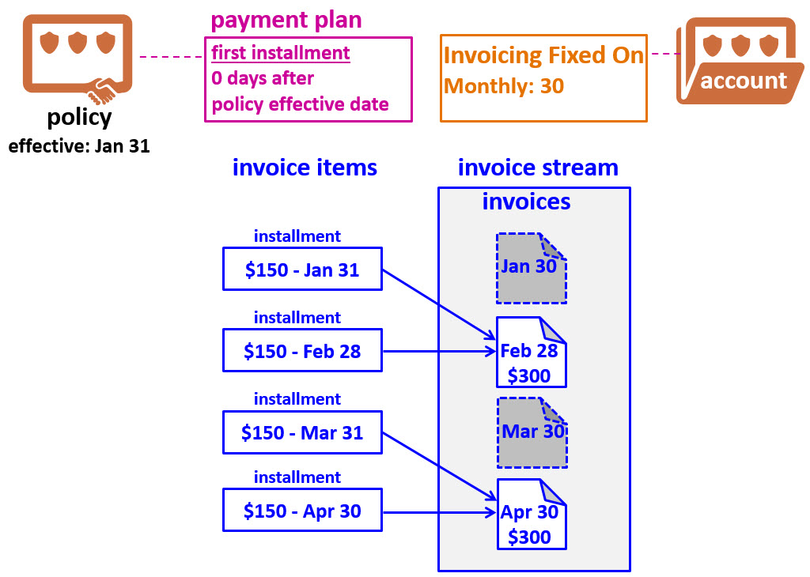

Disabling invoice alignment
When a pro rata charge is divided into installments, the expectation is that each installment will be assigned to a different invoice in consecutive order. For example, if a pro rata charge is split into four installments of $100 each, then the policyholder ought to receive one invoice every month with one $100 installment. This behavior is known as invoice alignment.
Invoice alignment is controlled by the payment plan. When invoice alignment is enabled, a single source is used to generate both invoice dates and invoice item placement dates for periodic installments. The fact that both sets of dates are coming from a single source ensures that installment invoice items are distributed evenly.
- For policy-level billing accounts, both sets of dates are determined by the payment plan.
- For account-level billing, both sets of dates are determined by the account's Invoicing Dates fields.
Invoice alignment is enabled by default for all new payment plans, and Guidewire recommends that invoice alignment be enabled for all payment plans.
It is possible to disable invoice alignment. This can be appropriate for insurers who started with a BillingCenter release that did not include invoice alignment and are upgrading to a release that does include invoice alignment. In this situation, the insurer may have built custom logic around the non-alignment behavior that they wish to preserve.
Determining invoice item placement dates without invoice alignment
When invoice alignment is disabled, invoice item placement dates are determined by the payment plan. The placement date of the first periodic installment is determined by either:
- The First Installment Invoiced and Days fields, if there is no out-of-sequence first installment.
- The Second Installment Invoiced and Days fields, if there is an out-of-sequence first installment.
The placement dates of the subsequent installments are one or more intervals after the first periodic installment. For example, suppose the payment plan has a monthly interval and the placement date of the first installment is January 10th. The placement dates of the remaining installments will be February 10th, March 10th, and so on.
Determining invoice due dates without invoice alignment
When invoice alignment is disabled, invoice dates are determined by the account's Invoicing Dates fields. For example, if an account has the Invoicing Dates monthly field set to the 10th, the dates of the invoices are January 10th, February 10th, and so on.
Misaligned installments
When invoice alignment is disabled, invoice item placement dates and invoice dates are determined by separate sources. Because of this, there can be circumstances where a single invoice has either two installment items for the same pro rata charge, or no item for the charge.
The following diagram depicts an example of misaligned installments. The down payment is not relevant to the example and has been omitted.

In this example, the account has monthly invoicing fixed on the 30th, or the last day of the month if the month has fewer than 30 days. There is a policy with an effective date of January 31, which falls one day after the monthly invoicing date. In addition, the payment plan specifies that periodic installments begin 0 days after the policy effective date. Therefore, the placement date for each invoice item is the 31st, or the last day of the month if the month has fewer than 31 days.
The first installment invoice item has a placement date of January 31. This is too late to be placed on the January 30 invoice, so it is placed on the next invoice – the February invoice. The second invoice item has a placement date of February 28. This item is also placed on the February invoice. The same pattern occurs with the March and April invoice items. The result is that some invoices have two installments and some invoices have no invoice items and therefore are never created.
If you choose to disable invoice alignment, be aware that unless there is configuration code that addresses the issue, instances of invoice misalignment can occur.
Invoice alignment and one-time charges
Invoice alignment has no impact on one-time charges. Invoice alignment is an issue only when a charge is sliced into multiple invoice items. By definition, every one-time charge is sliced into only a single invoice item.